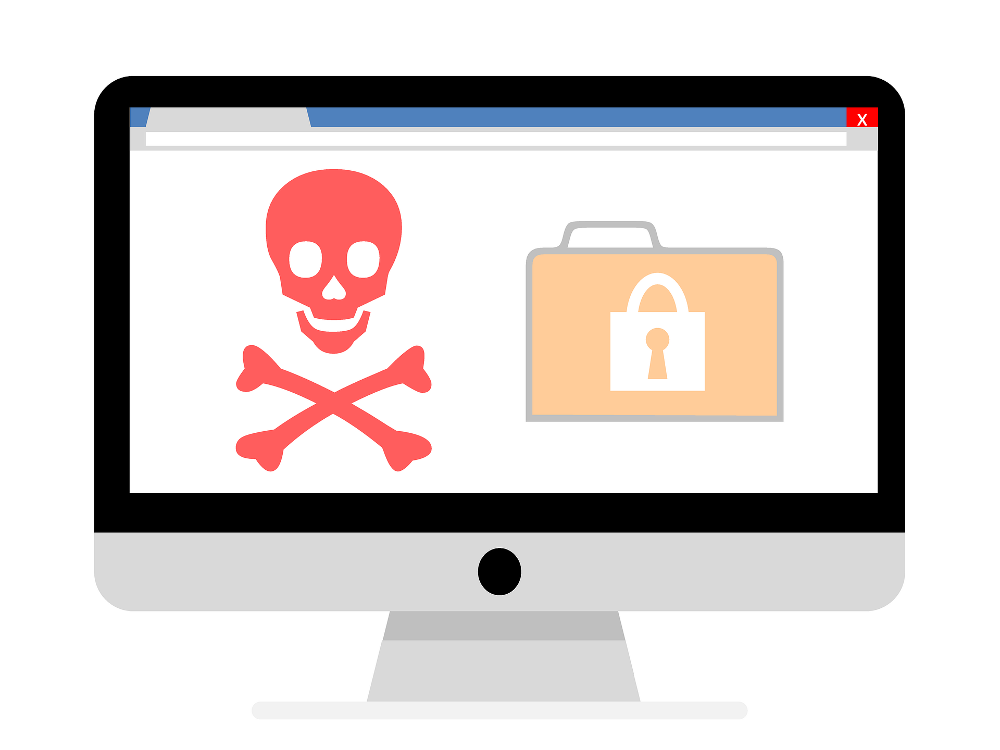

Common Cybersecurity Threats

Cyber threats can appear in many different forms. Learning how to recognize common threats can help you avoid them and better protect your personal information and devices.
Phishing
Phishing is a common cyber threat where attackers send fake emails, text messages, or other messages that appear to come from a trusted source. Their goal is often to convince someone to click a harmful link, download a malicious attachment, or provide personal information such as a password.
Malware
Malware is harmful software designed to damage a device, steal information, or gain access to a system without permission. Malware can be spread through unsafe downloads, suspicious email attachments, and infected websites. Keeping your software updated and avoiding unknown files can help reduce the risk.
Ransomware
Ransomware is a type of malware that can lock a device or encrypt important files and demand payment to restore access. It can spread through phishing emails, malicious downloads, and compromised websites. Regular backups and safe browsing habits can help protect important information from ransomware.
Social Engineering
Social engineering is when an attacker manipulates someone into giving away sensitive information or performing an unsafe action. Attackers may pretend to be a coworker, company, or other trusted person. Being cautious with unexpected requests and verifying who you are communicating with can help prevent social engineering attacks.
Cybersecurity Threat Comparison
This table compares common cybersecurity threats and ways to protect yourself from them.
| Threat | Description | Prevention |
|---|---|---|
| Phishing | Fake messages that try to steal information. | Avoid suspicious links and verify senders. |
| Malware | Harmful software that can damage devices. | Keep software updated and avoid unsafe downloads. |
| Ransomware | Malware that locks or encrypts important files. | Back up files and avoid suspicious attachments. |